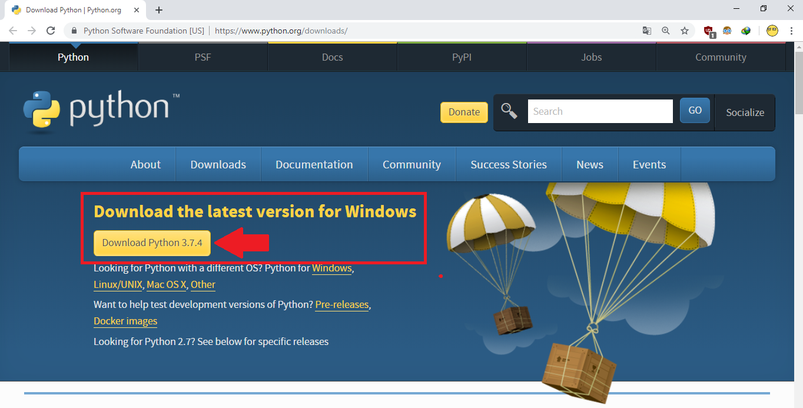

Instalando e Configurando as Ferramentas
Instalação do Python
São necessários poucos passos para a instalção do Python no Windows
- Vá para o site oficial do Python (https://www.python.org/) e clique no link para download da versão mais recente do Python para o Windows. 
- Execute o arquivo baixado para iniciar o assistente de instalação.
- Siga as instruções na tela para completar a instalação. Certifique-se de selecionar a opção para adicionar Python às variáveis de ambiente do Windows, caso contrário, você precisará especificar o caminho completo para o interpretador Python cada vez que quiser usá-lo.
-
Depois de instalar, abra o prompt de comando do
Windows e digite:
Esse comando deve retornar algo como "Python 3.x.x"
python --version

Após concluir a instalação do Python, você precisará de uma IDE ou Editor de Texto para começar a programar. No curso usaremos o Pycharm, mas existem vários outros softwares capazes dessa função.
Instalaremos o Python no Mac através do terminal. Procure o Terminal no Launchpad e inicialize-o
- Digite o comando abaixo e aperte Y para confirmar os downloads necessários
- Após isso, para chamar o Python basta digitar python3 no console
Normalmente o Linux já possui uma versão do Python 3 inclusa. Você pode verificar a versão instalada em sua distro abrindo o terminal e digitando:
Você deve ver a versão do python sendo 3.10 ou superior. Se ela estiver desatualizada, basta fazer o download com o comando:
Instalando o PyCharm
A primeira coisa que você deve fazer após instalar o PyCharm é certificar de construir um ambiente de desenvolvimento. O primeiro passo para isso é obter um IDE ou um Editor de Texto. Entre IDEs e Editores nós recomendamos que você use o PyCharm simplesmente por ser uma IDE focada para o desenvolvimento com essa linguagem. Posteriormente iremos ultilizar outras IDEs, mas no momento, tente focar em ultilizar essa ferramenta maravilhosa que é o PyCharm
O tutorial é bem simples e não é necessário um tutorial para cada SO. Usuários de Windows e Mac já devem estar familiarizados com a Instalação. É apenas Next e Next até finalizar e pronto! No caso do Linux, vou indicar vocês procurarem um vídeo a respeito, uma vez que ele se torna um pouquinho mais complicado.
Clique no botão abaixo para fazer o download do PyCharm
Download PyCharmPrimeiro Hello World
Quando se aprende uma nova linguagem de programação, existem várias pessoas que indicam fazer o primeiro Hello World como forma de se livrar de uma "maldição". Calma, não estamos falando sério não! Mas, nunca se sabe né? Vamos evitar que sejamos os primeiros a descobrir se isso é verdade. Abra o PyCharm, clique em New Project, Selecione uma pasta para o seu projeto e mãos a obra! Clique em New no canto superior > Python File [escolha o nome que você preferir]
Feito isso, digite:
Clique com o botão direito do mouse sobre o que escreveu e selecione Run
Parabéns!!!! Você fez o seu primeiro programa em Python! Agora uma nova trajetória se inicia em sua vida e daqui pra frente não vale mais desistir! Você é um vencedor desde que chegou a esse site e por isso eu não quero te deixar desistir!